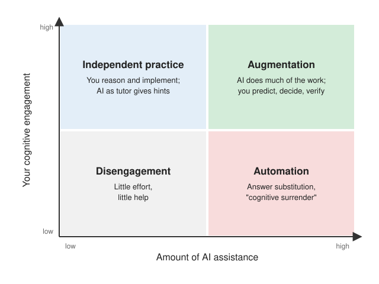

AI Coding Agents
Central message
- AI can greatly increase what you can accomplish — but accomplishing more does not automatically mean learning more.
- What matters is which cognitive activities are delegated and which remain with you.
AI for Learning
- Whether effort is “productive” depends on the learning objective, not on the task itself
- Three roles: AI as tutor (you reason, AI asks and hints), AI as collaborator (you decide, AI proposes), AI as agent (AI executes, you specify and verify)
- Risks: cognitive offloading, “cognitive surrender”, illusion of learning, fewer discussions with peers and instructors
- Self-check after AI-assisted work: Explain → Predict → Modify → Diagnose
AI for Applied Projects
- Benefits: speed, prototyping, exploring libraries, investigating data, review
- Risks: plausible-but-wrong results, self-confirming tests, silent changes to experimental conditions, supply chain, prompt injection
- Productivity evidence is mixed and setting-dependent
Deep learning code fails silently — in three ways
- Code runs but implements the wrong operation
- Code is correct but the experiment measures the wrong quantity
- The experiment is correct but the conclusion is not justified
Verification
- Four levels: implementation → experimental → scientific → operational
- Expected behavior must be derived independently of the implementation
- Define acceptance criteria before the agent writes code; track provenance
Takeaways
- Use AI deliberately · Stay cognitively engaged · Take responsibility for results
1 Motivation
AI coding assistants have evolved rapidly: from autocompleting a single line, to generating whole functions from a comment, to agents that work autonomously on an entire codebase. An agent receives a task in natural language (“fine-tune a DINOv2 model on my camera trap images”), inspects the repository and the data, writes code, runs it, reads error messages and outputs, and iterates.
For a course like this one, this creates a tension. AI tools can help you learn faster, explore more, and build far more ambitious projects than would otherwise fit into the available time. At the same time, an agent can produce a complete, working project without you having understood any of it. Accomplishing more does not automatically mean learning more. Effective use depends on which cognitive activities you delegate and which you keep.
The tools also change where expertise is needed. Writing a data loader from scratch becomes less central for many tasks; problem formulation, experimental design, evaluation, and critical interpretation become more important. Implementation skills do not become obsolete: understanding software and model internals remains essential to diagnose subtle failures. As discussed in the Training Guide, training neural networks fails silently — and recognizing such failures requires exactly the knowledge this course aims to build.
This page first focuses on how to use AI for learning, then on how to use coding agents in applied projects, and finally on how to verify results — your own and the agent’s.
2 What is an AI Coding Agent?
A coding agent combines a large language model (LLM) with tools and a loop. In contrast to a chat interface that only returns text, an agent can act on its environment:
- Read: inspect files, search the codebase, read documentation and dataset metadata
- Write: create and edit files
- Execute: run scripts, tests, experiments, shell commands, install packages
- Iterate: observe outputs (a stack trace, a metric, a plot) and decide on the next step
An agent can support three different activities:
- Code generation: producing code that implements a requested operation (“write a function computing IoU”).
- Agentic software engineering: navigating a repository, making changes, running checks, and iterating toward a goal (“add mixed-precision training and make sure all tests pass”).
- Agent-assisted scientific work: helping to formulate hypotheses, design experiments, identify methodological risks, and interpret results (“investigate whether the dataset contains correlated observations and recommend a split”).
The same tool can also act as a tutor that explains, asks questions, and gives hints — which leads to the central question of this page: what role should AI play when the goal is learning?
3 AI for Learning
3.1 Learning vs. Productivity
Consider two ways of spending 40 minutes:
- Debugging a tensor shape mismatch in a PyTorch training loop.
- Investigating why a model trained on randomly split camera trap images fails at a new camera location.
It is tempting to call the first “incidental” and the second “productive” effort. But debugging a shape mismatch can be an excellent learning experience: it reveals how convolutional layers transform spatial dimensions, how batches are represented, or how broadcasting works. Whether effort is productive is not a property of the task, but of the learning objective:
| Task | If the learning goal is… | Appropriate AI assistance |
|---|---|---|
| Fix a tensor shape mismatch | Understand tensor shapes | Hints and diagnostic questions |
| Fix a tensor shape mismatch | Compare model architectures | Let AI fix it, then inspect the change |
| Implement a CNN | Learn CNN mechanics | Attempt the implementation yourself |
| Implement a CNN | Explore generalization | Delegate routine implementation |
| Evaluate a classifier | Understand evaluation metrics | Compute examples by hand |
| Evaluate a classifier | Compare pretrained backbones | Delegate metric computation, validate the protocol yourself |
A consequence that is particularly relevant in continuing education: participants with different backgrounds may appropriately use different levels of assistance on the same exercise. A software engineer may delegate the training loop and focus on evaluation design; someone new to Python may learn most by writing the training loop with AI as a tutor.
3.2 What Do We Know?
Empirical evidence on AI and learning is still limited and mixed. In a randomized controlled trial with 120 university students at a single institution, those who used ChatGPT as a study aid scored lower on a surprise retention test 45 days later (57.5% vs. 68.5% correct) than those who used traditional study methods (Barcaui 2025). In contrast, a study with novice programmers found that access to an AI code generator improved code-authoring performance without a significant penalty on later post-tests (Kazemitabaar et al. 2023). Neither study evaluates autonomous coding agents, and both populations differ from this course — the results should not be generalized lightly.
Beyond experimental findings, educational institutions are formulating pedagogical recommendations. The MIT Ad Hoc Committee on AI Use in Teaching, Learning, and Research Training (2026) proposes the principle of augmentation, not automation: AI should enhance curiosity, creativity, and learning rather than automate them. The report names several concerns:
- Illusion of learning: obtaining a correct answer from a chatbot feels like having learned.
- Cognitive surrender: falling back on AI at the first hint of struggle.
- Displaced social learning: AI interaction replacing study groups, peer discussions, and contact with instructors.
These are best read as a framework for designing good learning practices — not as proof that AI inevitably reduces learning. At the same time, the report notes that “the potential of these technologies to augment work across campus is immense”.
Universities worldwide face this tension (The New York Times, 2026): AI proficiency is increasingly seen as a professional necessity, yet education aims to develop exactly the reasoning that can be delegated. The same reporting cites a study of 26,000 secondary-school students in which AI adoption raised homework scores by 18% but lowered scores on secure exams by 20% — performing well with AI is not the same as having learned. Ohio State’s president frames the central question as “What is OK to offload to A.I., and what is not? The answer to that depends on the field and depends on your stage of learning.” The University of Sydney’s “two-lane approach” responds by combining both: some assessments under secure conditions without AI, others that require AI use.
This course follows the same idea: you should learn both to solve selected problems on your own and to solve more ambitious problems effectively with AI.
3.3 Choosing the Level of AI Assistance
AI can take on different roles, which differ both in autonomy and in pedagogical purpose:
Level 1 — AI as Tutor
You do the reasoning and the implementation. The AI asks questions, explains, and gives incremental hints.
Best for: unfamiliar concepts and fundamental techniques.
Level 2 — AI as Collaborator
You and the AI develop the solution together. You make the technical decisions, review alternatives, and validate results.
Best for: applying concepts and developing practical competence.
Level 3 — AI as Agent
The AI executes multi-step tasks with substantial autonomy. You specify the objective and verify the important outcomes.
Best for: implementation-heavy work where the underlying concepts are already understood.
These are not stages that everybody must progress through. In the same project, you may use an autonomous agent for the data loading infrastructure while using AI as a tutor to understand contrastive learning.
Figure 1 illustrates that the amount of AI assistance and the amount of your own cognitive engagement are two separate dimensions. More assistance does not have to mean less thinking — if you stay actively involved in reasoning, predicting, and evaluating.

3.4 Effective Learning Workflows
How AI is prompted largely determines in which quadrant of Figure 1 one ends up. The following prompts illustrate interactions that keep the reasoning with you.
Socratic tutoring — when struggling with an unfamiliar concept:
Help me understand why self-attention uses separate query and key vectors.
Ask me questions, give hints progressively, and correct my misconceptions.
Do not immediately provide the full explanation.Guided debugging — when the debugging process is part of the learning objective:
My CNN produces an unexpected tensor shape. Do not change the code yet.
Help me trace the dimensions layer by layer, ask me to predict the output
shape of each layer, and point out where my predictions are inconsistent.Critical collaboration — for experiments and project work:
Review my experimental design for comparing two pretrained vision models.
Challenge my assumptions about splits, preprocessing, metrics, and confounders.
Prioritize threats to validity and suggest tests that could reveal them.
Do not modify the implementation.In contrast, prompts such as “fix this error”, “write the training script for my project”, or “explain what this code does” are not wrong — but when the objective is learning, they delegate exactly the part that builds understanding.
3.5 Illusion of Competence and Self-Assessment
The main risks for learners are:
- Cognitive offloading of productive effort: delegating exactly the struggle that builds understanding.
- Illusion of competence: a working notebook, or a fluent AI explanation one can repeat, feels like understanding.
- Missing judgment: detecting the subtle errors further below requires the knowledge the course aims to build.
It helps to distinguish three kinds of understanding, which overlap but are not interchangeable: understanding a concept, being able to apply it independently, and being able to critically evaluate an AI-generated solution. A simple routine after AI-assisted work tests all three:
- Explain: describe the key concepts and implementation decisions without consulting AI.
- Predict: what happens if a parameter, the architecture, or a preprocessing step changes?
- Modify: make one meaningful change independently.
- Diagnose: when a failure or unexpected result occurs, explain its cause before asking for a fix.
This is a suggested learning strategy, not a formal assessment instrument. Being able to modify and troubleshoot a system is particularly telling: reproducing an AI explanation is possible without the understanding needed to apply it.
In particular, be able to explain the design decisions of your work — what was split how and why, which preprocessing the backbone requires, which metric answers which question — and defend them with evidence. Do not delegate this reasoning to the agent: having the agent explain its choices is cognitive offloading of exactly the understanding the project should demonstrate.
Finally, learning is also social. AI is an additional resource, not a replacement for discussing with peers, asking instructors, or explaining a concept to someone else. For example, formulate and compare your hypotheses about an experiment in a group first, then ask an agent to challenge them.
Duration: 10–15 minutes. Goal: experience the difference between completing a task and understanding it.
- Ask an AI agent to implement a simple image classifier with a training and evaluation pipeline.
- Before running it: identify the key design decisions and predict the expected behavior (e.g. approximate accuracy, training time, which classes will be confused).
- Inspect the implementation. Explain the training objective, the data flow, and the evaluation procedure.
- Without AI assistance, modify one important aspect (e.g. the split, the augmentation, or the metric) and predict its effect before running it.
- Ask the AI to critique the original solution and compare its findings with your own.
Discussion: Did the agent help you understand the system, or primarily help you obtain a working implementation? What would you do differently next time?
4 AI for Applied Projects
In industry and research — and in your course project — coding agents are increasingly part of the daily workflow. The question is how to organize work so that agents can be highly productive while their results remain verifiable.
4.1 Benefits
- Speed for routine work: data loaders, configs, logging, plotting, and other boilerplate.
- Rapid prototyping and experimentation: baselines, ablations, and backbone comparisons in a fraction of the time — supporting the “build a baseline pipeline” step of the training recipe.
- Navigating unfamiliar code and libraries: large APIs (
timm,transformers,torchvision.transforms.v2), reference implementations of papers. - Investigating data: summarizing metadata, finding duplicates, plotting class distributions, inspecting misclassified samples.
- Review and critique: an agent instructed to challenge a pipeline can find leakage, metric bugs, or unjustified conclusions.
- Tackling previously infeasible tasks: work that would not have been attempted at all due to time constraints.
4.2 Risks
- Plausible but wrong results: code runs and produces numbers, but contains methodological errors (see examples).
- Optimizing for the wrong goal: asked to make a failing script or test pass, an agent may weaken checks, catch and ignore exceptions, or modify the evaluation instead of fixing the underlying problem.
- Self-confirming verification: generating tests is easy; generating meaningful, independent tests is much harder (see Independent Verification).
- Silent changes to experimental conditions: updating a dependency, changing a seed, modifying a dataset filter, or switching a checkpoint — each reasonable on its own, yet invalidating a comparison between experiments.
- Outdated or hallucinated APIs: deprecated arguments (
pretrained=Trueinstead ofweights=...), non-existent model identifiers, and — worst — a silent fallback to random initialization when the pretrained weights cannot be loaded. - Supply chain: hallucinated package names can be registered by attackers (“slopsquatting”, see Spracklen et al. (2025)).
- Prompt injection and data exposure: agents read untrusted content — READMEs, documentation, dependencies, issues — that may contain instructions attempting to influence what the agent executes or discloses. Repository content or data may also be transmitted to external services. For confidential datasets (e.g. medical images), this deserves explicit attention.
- Review burden and ownership: large agent-generated changes are hard to review; if nobody understands the pipeline, diagnosing failures becomes difficult.
4.3 Collaboration Modes
How much autonomy to grant depends on the task. In contrast to the learning levels above, these modes describe workflows, and they require different degrees of supervision:
| Mode | Human responsibility | Agent responsibility |
|---|---|---|
| Direct implementation | Specify change, review output | Implement and test |
| Plan and execute | Review approach and milestones | Investigate, plan, implement |
| Exploratory research | Evaluate hypotheses and evidence | Investigate alternatives, run analyses |
| Adversarial review | Decide which findings matter | Challenge assumptions, identify weaknesses |
Implementing a known function can be verified by a test. Determining the right evaluation protocol for an unfamiliar dataset requires judgment about the deployment scenario — which the human must own.
🤔 Think About It
What is the stopping criterion of a coding agent? How does it decide that a task such as “train a classifier with good performance” is finished?
Key considerations
It depends on the task description, the agent’s configuration, and the available checks. With a vague task, a plausible stopping point is “the script runs and prints a reasonable validation accuracy”. With explicit acceptance criteria — “no location appears in both train and test”, “the model overfits 32 images”, “macro-F1 is reported per class”, “results are compared to a linear probe baseline” — the agent can execute a substantial validation workflow before stopping. Vague success criteria invite superficially successful solutions.
4.4 What About Productivity?
Evidence on productivity is mixed and setting-dependent. A randomized study with 16 experienced open-source developers working on their own, familiar repositories found that early-2025 AI tools made them 19% slower, while they believed they were faster (Becker et al. 2025). A follow-up study (Joel Becker 2026) estimated an 18% speedup for returning developers and 4% for newly recruited ones. These estimates are statistically inconclusive (confidence intervals include zero) and, according to the authors, an unreliable signal due to selection effects: developers increasingly declined to participate or withheld tasks because they did not want to work without AI.
Productivity is also multidimensional: implementation time is only one part, next to correctness, review effort, maintainability, and the ability to tackle tasks that were previously out of reach. An experienced developer in a familiar repository and a student building an exploratory ML prototype are very different settings.
5 When Code Fails Silently
The statement “deep learning code fails silently” can be made more precise. There are three distinct propositions:
- Code can execute correctly while implementing the wrong operation — e.g. an IoU function with a wrong union, or an augmentation that does not transform the bounding boxes.
- An experiment can be implemented correctly while measuring the wrong quantity — e.g. a correct training loop evaluated on a split that leaks near-duplicates.
- An experiment can be conducted correctly while its conclusions remain unjustified — e.g. claiming backbone A beats backbone B based on a single seed and a 0.5% difference.
These apply equally to human- and agent-written code. Agents add speed, scale, and autonomy — and the possibility that nobody developed a mental model of the system. The following examples are typical of computer vision projects. In every case, the code runs without error, and recognizing the problem requires subject-matter expertise.
5.1 Example 1: The Split Encodes a Deployment Assumption
Task: “Train a species classifier on my camera trap images and report test accuracy.”
A typical default is a random split:
train_ds, val_ds, test_ds = random_split(dataset, [0.7, 0.15, 0.15])Camera traps record sequences (several near-identical frames per trigger) at fixed locations. A random split places near-duplicates into training and test set, and the model can exploit the background rather than the animal. Whether this is a problem depends on the question being asked:
| Generalization objective | Appropriate split |
|---|---|
| New frames from already observed sequences | Frame-level split (rarely a meaningful objective) |
| New sequences at known camera locations | Sequence-level split |
| New dates or seasons at known locations | Temporal split |
| Completely unseen camera locations | Location-level split |
from sklearn.model_selection import GroupShuffleSplit
splitter = GroupShuffleSplit(n_splits=1, test_size=0.2, random_state=42)
train_idx, test_idx = next(splitter.split(df, groups=df["location_id"]))Note that GroupShuffleSplit creates a single holdout split that keeps groups separate; it does not guarantee class balance or representativeness. Check the class distribution of the resulting splits, or use StratifiedGroupKFold.
The same structure appears with multiple images per patient, per product, or overlapping tiles of a satellite scene. The general principle: a train/test split encodes an assumption about the deployment distribution. An agent can be tasked to investigate what constitutes an independent observation — but deciding which deployment scenario matters is your responsibility.
5.2 Example 2: Augmentations Encode Assumptions
Task: “Add data augmentation to reduce overfitting.”
A generic pipeline is easy to generate:
T.Compose([T.RandomResizedCrop(224), T.RandomHorizontalFlip(), T.RandomRotation(30)])Several distinct failure modes can hide in such a pipeline:
- The transformation changes the label: rotating a 6 produces a 9; flipping an image labelled “left lung lesion” invalidates a laterality-sensitive label.
- The transformation removes the relevant object:
RandomResizedCropwith its default scale(0.08, 1.0)can crop away a small, distant animal in a camera trap image, leaving an empty background labelled “zebra”. How often this happens depends on object size and position. For detection with correctly updated annotations, cropping can be perfectly valid. - The transformation creates unrealistic samples: a flipped chest X-ray shows the heart on the wrong side. For a binary pneumonia classifier this may not change the label, but it trains on anatomically implausible data.
- Image and target are desynchronized: transforming the image but not the bounding boxes or masks (e.g. using
torchvision.transformsv1 on images only) silently corrupts the targets.
Augmentations impose invariance and distributional assumptions. Choosing them is a modeling decision, not boilerplate.
5.3 Example 3: Flawed Evaluation
Task: “Evaluate the model on the validation set and report the results.”
val_ds = ImageFolder("data/val", transform=train_transform)
for x, y in val_loader:
preds = model(x).argmax(1)
correct += (preds == y).sum()
print(f"Accuracy: {correct / len(val_ds):.3f}")The snippet contains several issues with very different implications:
| Issue | Implication |
|---|---|
| Random (training) transforms on validation data | Increases measurement variability and changes which distribution is evaluated; not necessarily a bias in a fixed direction |
Missing model.eval() |
For models with mode-dependent layers (Dropout, BatchNorm), predictions differ from inference behavior — invalidates the evaluation |
Missing torch.no_grad() |
Wastes memory and compute; does not make predictions incorrect |
| Accuracy on imbalanced data | Can hide poor minority-class performance; with 65% “deer”, predicting only “deer” yields 65% accuracy |
A further, process-level issue: an agent asked to “improve the test score” will tune against the test set, effectively turning it into a validation set. And the agent’s summary (“the model achieves 94% accuracy”) is a claim, not a verified result.
5.4 Further Examples
Task: “Use a pretrained SigLIP model as a feature extractor.”
A common default is the ImageNet normalization (mean=[0.485, 0.456, 0.406], std=[0.229, 0.224, 0.225]). Many foundation models were trained with different statistics (SigLIP uses mean and std of \(0.5\), mapping pixels to \([-1, 1]\)), resolutions, or cropping. A related classic is loading images with OpenCV (BGR) and feeding them to an RGB model. The impact is model- and task-dependent — sometimes negligible, sometimes substantial — and nothing in the code indicates the problem.
Preprocessing is specific to the checkpoint and implementation, not to the architecture family. Resolve it from the model and verify it with a pinned library version:
import timm
model = timm.create_model("hf-hub:timm/vit_base_patch16_siglip_224.webli", pretrained=True)
config = timm.data.resolve_model_data_config(model)
print(config) # inspect mean, std, input_size, interpolation, crop_pct
transform = timm.data.create_transform(**config, is_training=False)Task: “The training script crashes, please fix it.” Some images are corrupted. A quick fix that makes the script run:
def __getitem__(self, idx):
try:
img = Image.open(self.paths[idx])
return self.transform(img), self.labels[idx]
except Exception:
return self[(idx + 1) % len(self)] # silently skipThe crash disappears, but except Exception also swallows unrelated bugs; replacing a failing sample with its neighbor changes the sampling distribution (neighbors often share class or sequence); and if all samples fail (e.g. a wrong root directory), the recursion ends in a RecursionError far from the actual cause. The immediate objective (prevent a crash) conflicts with the methodological one (preserve correct sampling). Better: scan and log problematic files once, decide explicitly how to handle them, and fail loudly otherwise.
Task: “Compute precision and recall for my object detector at IoU 0.5.”
tp = 0
for pred in preds:
ious = [iou(pred.box, gt.box) for gt in gts]
if max(ious, default=0) >= 0.5:
tp += 1
precision = tp / len(preds)
recall = tp / len(gts)A simple test with one prediction per object passes. But one ground-truth object can be matched by multiple predictions: duplicates all count as true positives, precision is inflated, and recall can exceed 1. A common protocol processes predictions in order of decreasing confidence and matches each ground-truth box at most once. Benchmark protocols differ in details — COCO evaluation, for example, also handles categories, crowd/ignore flags, and area ranges — so prefer established tools such as pycocotools or torchmetrics.
An agent has trained a camera trap classifier and reports:
| Accuracy | |
|---|---|
| Training | 98% |
| Validation | 96% |
| New site (deployment) | 72% |
The dataset contains multiple images per camera location. What would you investigate first?
- Whether the validation split shares locations with training
- Whether a larger backbone improves performance
- Whether stronger augmentation improves robustness
- All three, without prioritizing an explanation
Click for discussion
Good first investigation: 1
The small train/validation gap combined with a large drop at the new site suggests that the validation set does not measure the relevant generalization — likely a shortcut based on location-specific features (background, camera angle). Before changing the model, establish exactly how the validation and new-site datasets were constructed. Options 2 and 3 may help later, but without a trustworthy validation protocol, their effect cannot be measured.
Extension: given the agent’s training code, formulate three tests that would detect potential problems — then run them.
6 Verification
The examples share a pattern: the code runs, and the error lies in an assumption about the data, the model, or the evaluation. Checking that code works is not the same as checking that a result is valid. It is useful to distinguish four levels of verification — for your own work as much as for an agent’s:
| Level | Question | Typical evidence |
|---|---|---|
| 1. Implementation correctness | Does the program implement the intended operations? | Unit tests, shape assertions, reference implementations, inspecting transformed inputs |
| 2. Experimental correctness | Does the evaluation measure what it claims to measure? | Split validation, leakage checks, baselines, metric checks, reproducibility |
| 3. Scientific validity | Does the evidence support the conclusion? | Ablations, multiple seeds and uncertainty estimates, confounders, alternative explanations |
| 4. Operational validity | Does it work under realistic deployment conditions? | Distribution shift, latency, memory, failure handling, security, monitoring |
Agents can assist at every level, but evidence at one level does not establish correctness at another. A perfectly tested pipeline (level 1) can still evaluate on a leaky split (level 2).
6.1 Independent Verification
Agents can generate both the implementation and the tests that confirm it. If both share the same misunderstanding, all tests pass. Consider an IoU function with a wrong union:
def iou(a, b): # boxes in xyxy format
inter = intersection_area(a, b)
union = area(a) + area(b) # bug: should subtract inter
return inter / union
def test_iou():
# expected value computed with the same (wrong) formula
assert iou([0, 0, 2, 2], [1, 1, 3, 3]) == 1 / 8The test passes; the correct value is \(1/7\). “Independent” refers to how the expected behavior is derived — not necessarily to who writes the test (a different agent may well share the same misconception). Independent sources of expectations include:
- Analytically derived properties: identical boxes must give IoU \(= 1\) (the buggy version returns \(0.5\)); disjoint boxes must give \(0\).
- Reference implementations: compare against
torchvision.ops.box_iouorpycocotools. - Constructed counterexamples: duplicate predictions for the detection metric, a split with a known shared location.
- Acceptance criteria defined before implementation.
6.2 Acceptance Criteria before Implementation
Verification criteria can be specified before an agent writes a single line of code, which makes the task much harder to satisfy superficially. For a camera trap training pipeline, for example:
- Dataset integrity: no
location_idappears in both training and test set. - Preprocessing: generated inputs match the pretrained model’s reference transform.
- Learning sanity check: the model can overfit a tiny subset (e.g. 32 images).
- Metric implementation: metrics on a hand-constructed example match expected values.
- Generalization: sequence-level and location-level test performance are both reported.
- Traceability: dataset version, model weights, configuration, and random seeds are recorded.
6.3 Reproducibility and Provenance
Agents iterate quickly, and every iteration may change something. To keep experiments comparable, track:
- Data: dataset version, filters, split definition (ideally the split indices themselves)
- Model: exact checkpoint identifier and source
- Configuration: all hyperparameters in a versioned config file
- Environment: pinned library versions (a lock file)
- Results: metrics with the commit, config, and seed that produced them
🤔 Think About It
Which of the examples above would be caught by a unit test? Which by visualizing a batch of inputs after preprocessing? And which only by reasoning about the data and the deployment scenario?
Key considerations
- Unit tests (with independently derived expectations): the detection metric (duplicate predictions as counterexample), unsynchronized box transforms, silently skipped samples (count loaded samples per class), missing
model.eval()(assertmodel.training is Falsein the evaluation function). - Visualizing inputs after preprocessing: wrong normalization or channel order, label-breaking augmentations, crops that remove the object.
- Reasoning about data and deployment: split design, which invariances hold, which metric answers the question.
The last category is the hardest to automate — and the one this course aims to build.
7 Takeaways
AI tools will keep improving, and many of the specific failure modes on this page may become less frequent. Three principles are more durable than guidance tied to any particular tool or model generation:
- Use AI deliberately: choose its role based on what you are trying to learn, not merely on what can be automated.
- Stay cognitively engaged: ask questions, make predictions, challenge explanations, and regularly work independently.
- Take responsibility for results: understand the assumptions, validate important claims, and be able to explain what the system does and why.